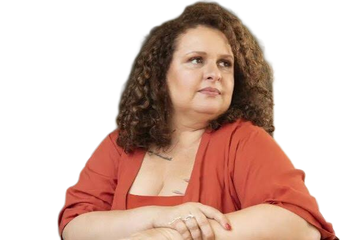

Ruptura com o silenciamento
Excluídas do cânone por muito tempo, as mulheres hoje ocupam espaços de destaque e narram as próprias vivências, sem a mediação do olhar masculino.

Literatura
Vozes das Mulheres na Literatura Contemporânea Brasileira — Parte 1
Por séculos, elas foram musas. Agora são autoras, e contam a própria história.
01 · Contexto
A produção literária feminina atual no Brasil vai além da autoria: representa um movimento de revisão histórica e de afirmação política.

Excluídas do cânone por muito tempo, as mulheres hoje ocupam espaços de destaque e narram as próprias vivências, sem a mediação do olhar masculino.
Saem a “musa passiva” e a “mulher angelical”. Entram personagens complexas, contraditórias, autônomas e com desejos próprios.
A escrita denuncia violências físicas e simbólicas e discute o corpo, a ancestralidade e as estruturas de poder na sociedade brasileira.
02 · Estilo
Estilo consolidado na América Latina que funde a realidade cotidiana com elementos fantásticos.

Diferente da Fantasia e do Terror, os eventos sobrenaturais são aceitos pelos personagens como parte comum da vida.
O elemento “mágico” costuma ser metáfora de questões sociais, políticas ou psicológicas profundas.
O tempo muitas vezes é cíclico, e o espaço (como Candeia) tem carga simbólica: reflete o estado emocional dos personagens.
03 · A obra
Obra fundamental da literatura cearense contemporânea, que une rigor estético e cultura popular.
Após a morte da mãe, Samuel cumpre um pedido dela: atravessa o sertão a pé, de Juazeiro do Norte até Candeia, em busca da avó e do pai que nunca conheceu. Sem ter onde ficar, ele se abriga dentro da enorme cabeça de uma estátua de Santo Antônio que nunca foi colocada no corpo.
Socorro AcioliCompanhia das Letras2014

Uma estátua de Santo Antônio em Caridade (CE) ficou décadas com a cabeça separada do corpo, por causa de um erro técnico.
Representa a busca pela identidade (o pai desconhecido) e a transfiguração do indivíduo pela dor e pela jornada.
A fé como ferramenta de sobrevivência e de barganha ética.
Falta comida, água e telhado. Faltam também afeto e gentileza.
A brutalidade de Helenice e a empatia sofrida da moça da bodega.
Um “cemitério de gigantes”: cidade em agonia que interage com o herói.
A dor gera egoísmo e solidariedade, e humaniza os personagens.
04 · Vídeo
Resumo da obra
de Socorro Acioli
05 · Hora do jogo